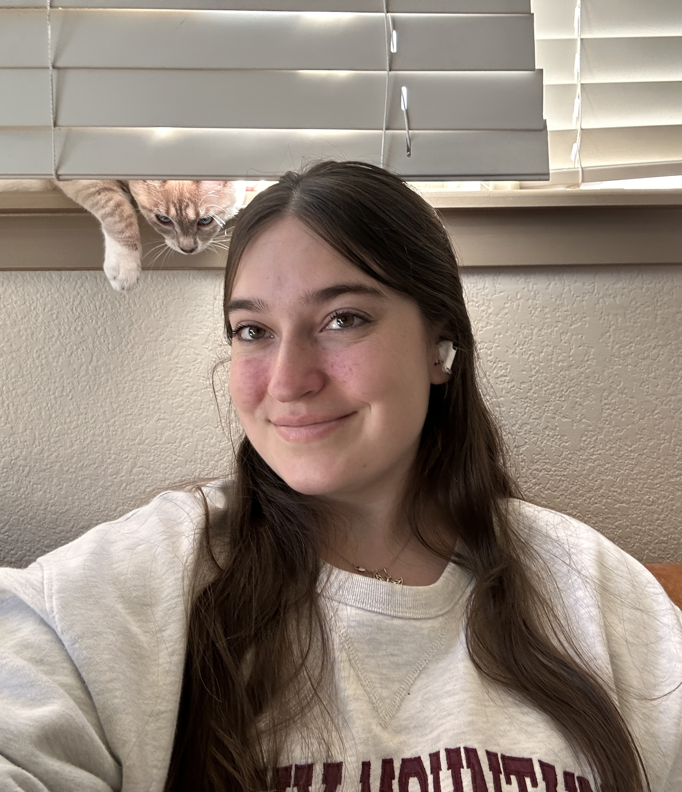
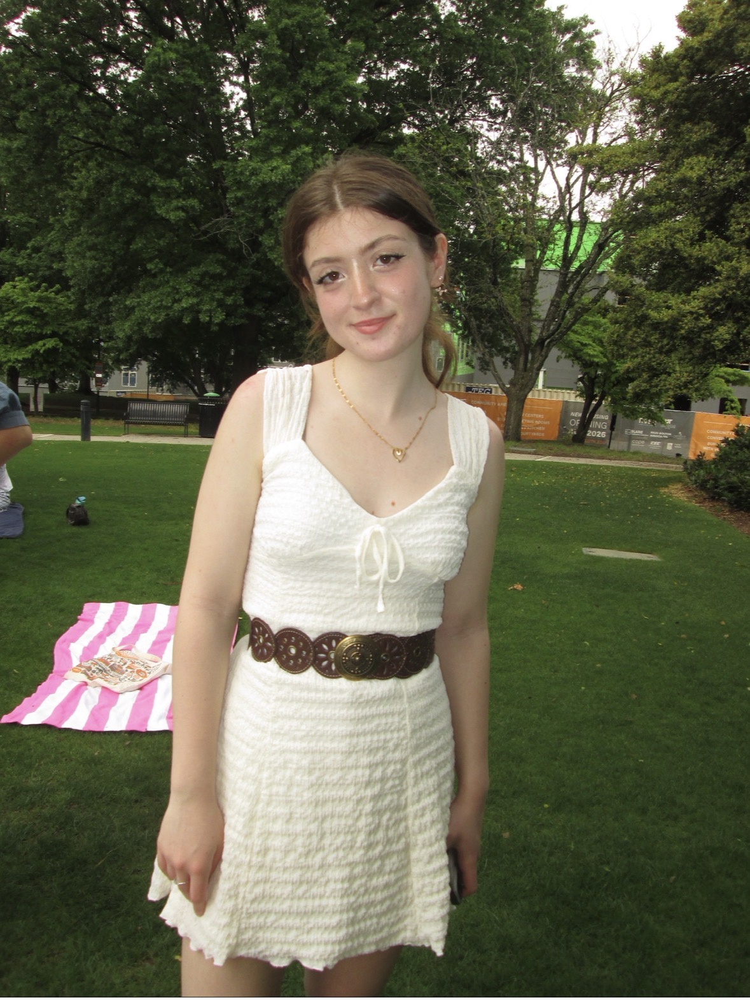
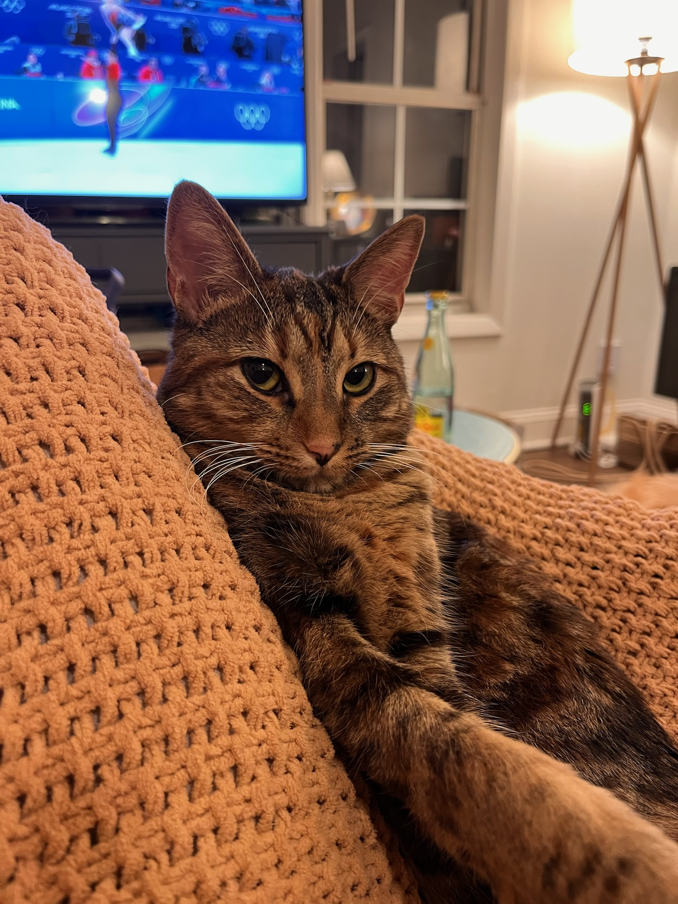
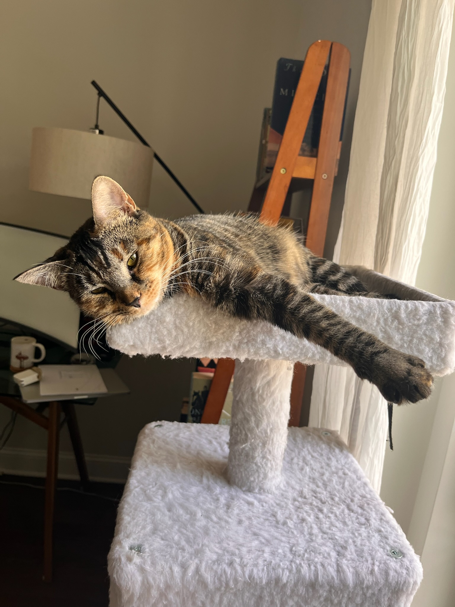

Sophie Wohltjen
Principal Investigator
Sophie is an assistant professor of psychology at the University of Tennessee, Knoxville. She completed her post-doctoral research in the Psychology department at UW-Madison working with Paula Niedenthal. She received her Ph.D. from the Psychological and Brain Sciences department at Dartmouth College, where she worked with Thalia Wheatley. Her unaccredited skills include sewing, singing, and undoing knots in necklaces.
I am considering Ph.D. graduate students for fall 2027. See Join the Lab for more information.

Reese Chadwick
Ph.D. Student
Reese is a first-year Experimental Psychology PhD student with a focus in Social Psychology. Her research examines how people integrate facial cues in social cognition and decision-making. She is particularly interested in the ways that facially communicated signals like gaze and emotion shape interpersonal judgments. To study these questions, she uses eye tracking and behavioral measures across stimulus modalities (static vs. dynamic images) and social contexts (dyadic vs. group interactions). Reese's research is situated within her broader interest in how the social and cognitive mechanisms underlying interpersonal judgment shift across the lifespan, and how those changes influence social outcomes like connectedness, wellbeing, relationship quality, and decision-making.
Curious about conducting scientific research? Join the Lab.
Eliana Eller
Undergraduate Student · Junior
Eliana is a junior majoring in Psychology with a minor in Sociology. She is deeply interested in forensic psychology, specifically focusing on how nonverbal communication, facial expressions, and emotional data can inform behavioral assessment and clinical interventions. Outside of the lab, she enjoys running, weightlifting, and hanging out with her friends.

Katie Stinson
Undergraduate Student · Junior

Max
Max is an eight year old golden retriever. She was born in rural New Hampshire, but these days you can find her on the porch or by the door to the porch, where she likes to sit and ask to go on the porch. Her research interests include the social dynamics of why the cats are getting pets and she isn't.

Slink
Abraham Slinkoln is a one year old cat, though her mother more often calls her a chicken for no real reason. Her research interests lie in understanding the relationship between pushing objects off of tables and human anger displays.

Tubbs
Harriet Tubbman is Slink's sister and bonded best friend. She enjoys sneaking off to the kitchen at midnight to eat kibble in the dark. Her research interests are water and why it tastes so much better when it's in a toilet or bathtub.